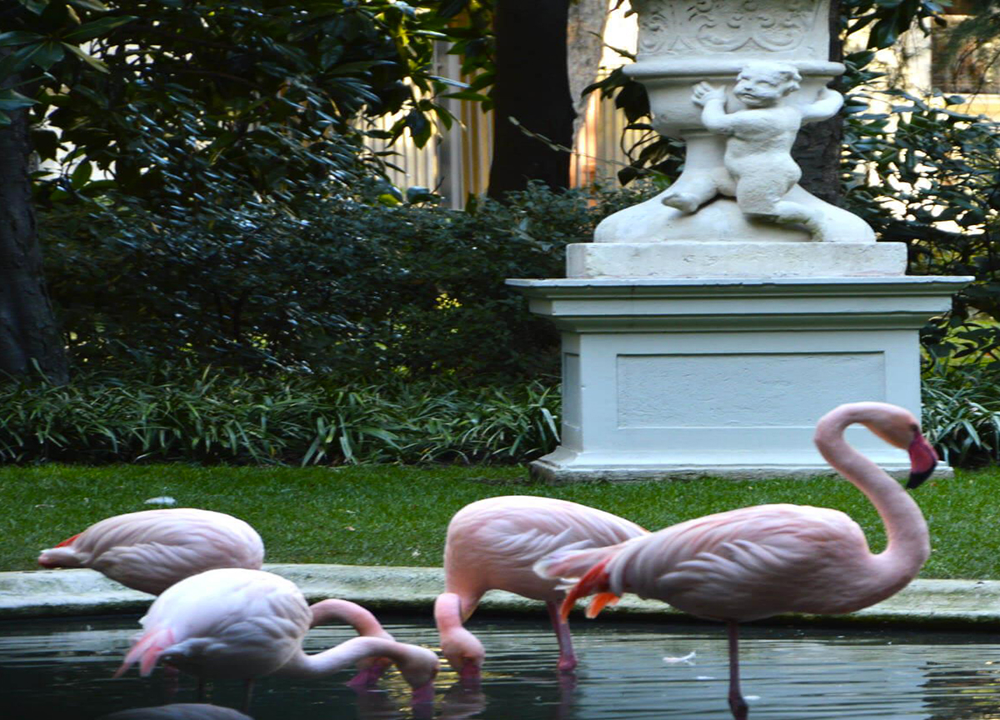
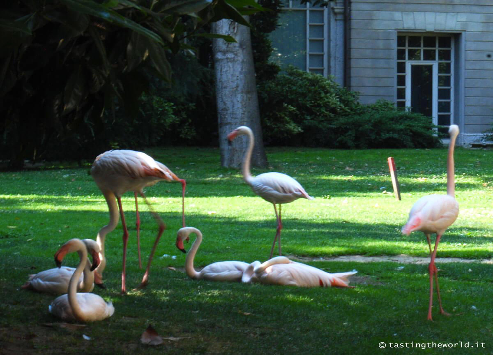

Villa Invernizzi
Via Cappuccini, 7, 20122 Milano MI
Orari: Residenza privata
Villa Invernizzi
Via Cappuccini, 7, 20122 Milano MI
Orari: Residenza privata
Ho sempre avuto un talento naturale a camminare senza avere una meta ben precisa e sono certo che se esistesse una disciplina olimpica una paio di ori li avrei vinti.
Ieri, complice uno dei soliti ritardi di Trenord ho deciso di affinare la mia arte.
Durante il tragitto da scuola Mohole al Duomo mi sono ritrovato a due passi da Porta Venezia,in una zona detta quadrilatero del silenzio perchè qui tutti i rumori della città svaniscono.
Avevamo già parlato del quadrilatero del silenzio in un altro articolo, ma non avevamo però notato il giardino di quella piccola villa liberty nel quale una colonia di splendidi fenicotteri, trascorre placidamente le sue giornate tra il giardino e la piscina per loro costruita.
Giuro che non è stata un'allucizazione, i fenicotteri ci sono veramente anche se il giardino di villa Invernizzi è un microcosmo a se in una città frenetica come Milano.
Chiedendo spiegazioni a una signora che abita in zona, ho scoperto che Villa Invernizzi è di proprietà del famoso ‘papà’ dei formaggini, divenuto ad un certo punto della carriera il Cavalier Invernizzi.
Egli volle creare questa oasi negli anni ’70, e per realizzarla acquistò un palazzo adiacente alla villa, che demolì.
Furono importati i leggiadri uccelli dall’Africa e dal Cile,e nel parco nacque la prima colonia che di generazione in generazione ha continuato ad abitare il giardino, divenendo il piccolo e silenzioso stormo di oggi.
I fenicotteri non sembrano avere la benché minima intenzione di andarsene, e le volontà testamentarie dei coniugi Invernizzi li tutelano.
Purtroppo il palazzo non è visitabile, ma attraverso le inferriate lo spettacolo dei placidi fenicotteri rosa è osservabile, e non c’è passante che resista alla tentazione di gettare lo sguardo fermandosi un attimo.